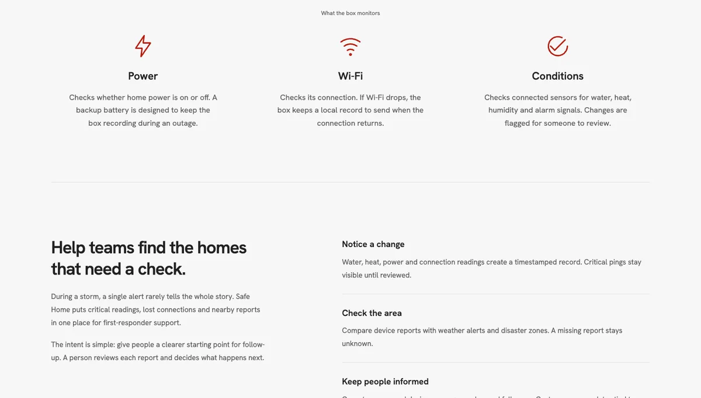
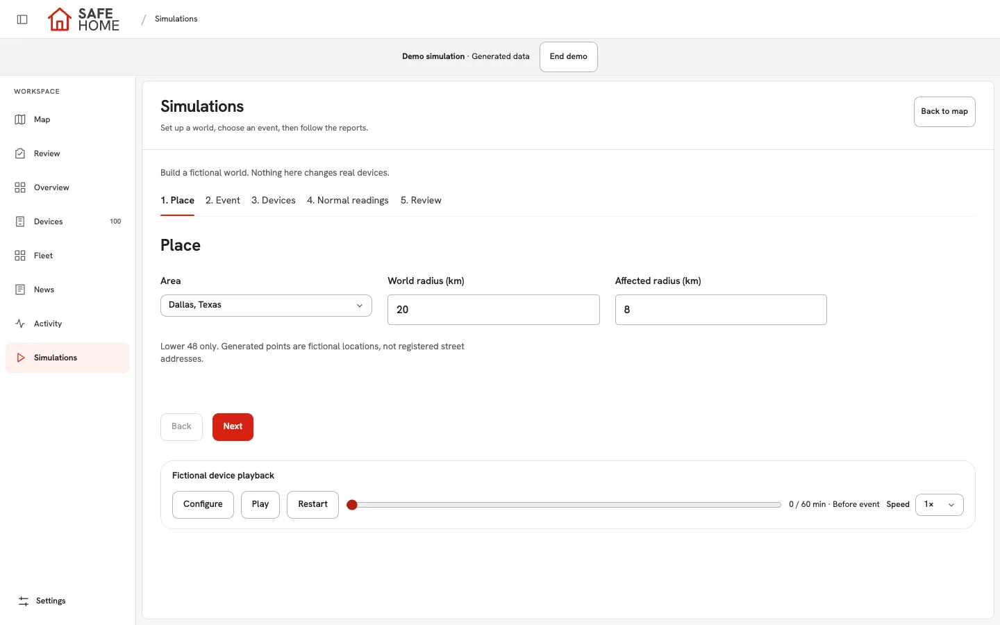
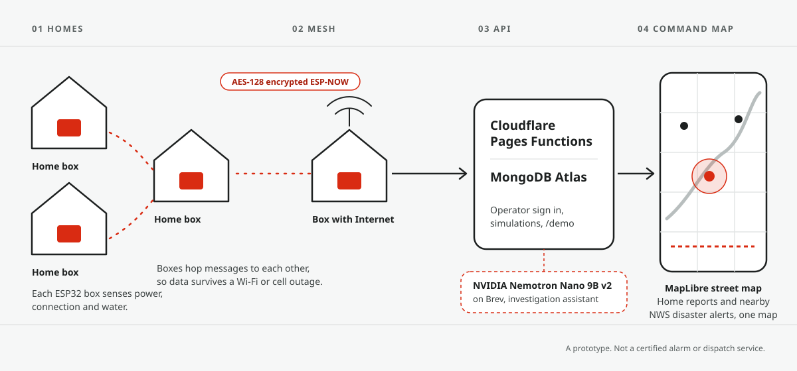

HackUTD 2026 winner
Hardware and web app
Safe Home
A home black box that keeps reporting when Wi-Fi and cell go down, with one map for first responders.
- Open the live site
- Backup address
- Private repo

In numbers
- 4people on the team
- 59%of the 649 commits are mine (385)
- 288tests passing, per the project log
- 49docs in the repo
The problem
In a storm, the homes that most need help are often the ones that go quiet. Power drops, Wi-Fi drops, cell service drops, and the home stops reporting at the same moment it matters. A single alert rarely tells the whole story, and a missing report is easy to mistake for a calm one.
The project asked two questions. How can a home keep reporting when its own connection is gone? And how can the people checking on homes see all of it in one place?
How the mesh survives an outage
- Every home has a box. It senses power, connection and water.
- Boxes talk to each other. Messages are encrypted with AES-128 and hop from box to box over an ESP-NOW mesh.
- One box with Internet uploads. So a home with no Wi-Fi or cell can still get its report out.
- The map lights up. First responders see the report next to nearby weather alerts.
You can also click a house in the picture.
The animation is a model of the idea, not a recording. Take a house offline and the reports find another route to the one with Internet. ESP-NOW is a protocol that lets ESP32 chips message each other directly, without a router.
What the box watches
Each box checks three things. Power: whether home power is on, with a backup battery designed to keep the box recording during an outage. Wi-Fi: if the connection drops, the box keeps a local record and sends it when the connection returns. Conditions: connected sensors for water, heat, humidity and alarm signals, with changes flagged for someone to review.

Readings become a timestamped record. Critical pings stay visible until someone reviews them, and a report that is missing stays marked unknown instead of being treated as fine. A person reviews each report and decides what happens next.
The command map
First responders and operators work from one street map. Home reports sit next to weather alerts and disaster zones, so the question changes from "which alert fired" to "which homes near this storm have gone quiet". The site has three views: the command map, your home, and event history. Operators can also send a device message and record the follow-up.
You can try it without any real data. The demo runs a simulation in five steps: place, event, devices, normal readings and review. It plays back 60 minutes of fictional device reports around a fictional storm, and nothing in it touches a real device.

The whole system

The boxes run ESP32 firmware. The web app and the API run on Cloudflare Pages Functions, reports are stored in MongoDB Atlas, and the map is MapLibre. An AI assistant running NVIDIA Nemotron helps operators investigate. Its checks passed on synthetic data.
Operators sign in, run simulations and can try a fictional hurricane at safehomemesh.us/demo.
What I did
- Owned product, design and integration on a 4-person team.
- Built the web app and the street map command center that first responders use.
- Wired the app to the API so the map shows live reports.
- Wrote 385 of the team’s 649 commits, and 49 docs sit in the repo.
Two days at HackUTD
The hackathon starts. The team opens its repo at 1:53 pm.
The box firmware and the home box system get merged in.
First test on real hardware. Mesh fixes go in right after.
Safe Home wins HackUTD 2026: Zero Day.
What it is not, yet
- A prototype. It is not a certified alarm or dispatch service.
- How long the boxes last, and replaying data after an outage, still need testing on real hardware.
- The hurricane demo is fictional, and the assistant’s checks used synthetic data.
- The code is in a private repo, so there is no link.
What I learned
Say what you do not know. A missing report is not a calm report, so the product marks it unknown instead of guessing. That one rule shaped the map.
Test on real hardware early. The first run on real boxes happened at 1 am on day two, and the mesh fixes came right after. A simulation had not shown them.
Integration is most of the work. Boxes, firmware, API, map and assistant all had to work together, and the 288 passing tests helped keep them that way.